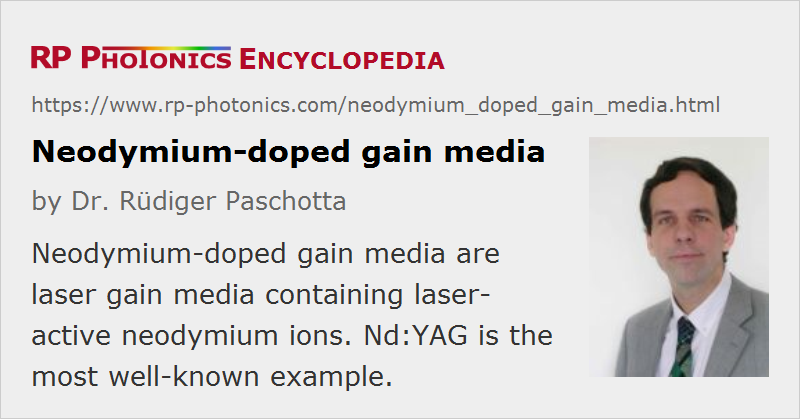

Neodymium-doped Gain Media
Definition: laser gain media containing laser-active neodymium ions
More general term: solid-state gain media
German: Neodym-dodierte Verstärkermedien
Categories: optical materials, lasers
How to cite the article; suggest additional literature
Author: Dr. Rüdiger Paschotta
Neodymium (chemical symbol: Nd) is a chemical element belonging to the group of rare earth metals. In laser technology, it is widely used in the form of the trivalent ion Nd3+ as the laser-active dopant of gain media based on various host materials, including both crystals and glasses.
The usual pump wavelength is 808 nm (for Nd:YAG; wavelengths for other host materials can somewhat differ), but a higher slope efficiency can be achieved by directly pumping into the upper laser level 4F3/2 with 869-nm light. The strongest laser transition is that from 4F3/2 to 4I11/2 for 1064 nm, but other transitions are available with longer or shorter wavelengths (see Figure 1). In order to achieve lasing on those, lasing at the 1064-nm line needs to be suppressed by inserting an appropriate wavelength filter (usually consisting of one or more dichroic mirrors) into the cavity. Via multi-phonon emission, the populations in levels 4I11/2 to 4I15/2 are quickly transferred to the ground-state manifold 4I9/2. (The lower-state lifetime is much smaller than the upper-state lifetime.) Hence, there is normally negligible population in all these levels, so that neodymium-doped gain media exhibit pure four-level behavior. The exception is the case where the lower level is the ground-state manifold 4I9/2: 946-nm Nd:YAG lasers (and other Nd-based lasers emitting between 900 and 1000 nm) are quasi-three-level lasers, exhibiting a fairly high threshold pump power.
For high excitation densities, as can occur particularly in Q-switched lasers, but also in lasers operating on the weaker laser transitions, there can be significant energy losses due to energy transfer (→ upconversion) to higher-lying levels with small lifetimes.
The most common neodymium-doped gain media are:
- Nd:YAG = Nd:Y3Al5O12 (yttrium aluminum garnet, → YAG lasers): the classical choice for 1064 nm, but also usable at 946 and 1319 nm (and a few other lines); isotropic; still very common particularly for high-power lasers and Q-switched lasers
- Nd:YVO4 (yttrium vanadate, → vanadate lasers) for 1064, 914 and 1342 nm: very high pump and laser cross sections and larger gain bandwidth, compared with Nd:YAG, hence particularly attractive for low-threshold lasers; also good properties for high-power operation with good beam quality (low dn / dT); birefringent
- Nd:YLF = Nd:YLiF4 (yttrium lithium fluoride → YLF lasers) for 1047 and 1053 nm: birefringent, long upper-state lifetime, weak thermal lensing; useful for, e.g., high-power Q-switched lasers
- Nd:glass: various glasses, mostly silicates and phosphates; often used for neodymium-doped optical fibers, e.g. in fiber lasers and amplifiers (→ laser crystals versus glasses)
Less common neodymium-doped gain media are:
- Nd:GdVO4 (gadolinium vanadate) for 1064 and 1341 nm: similar to Nd:YVO4, but having a larger gain bandwidth
- Nd:GDD (gadolinium gallium garnet): used for high-power heat capacity lasers
- the tungstates Nd:KGW = Nd:KGd(WO4)2 and Nd:KYW = Nd:KY(WO4)2: birefringent, large gain bandwidth, large Raman cross sections
- Nd:YALO = Nd:YAlO3 for 1079 and 930 nm: birefringent
- Nd:YAP = Nd:YAlO3 for 1079 or 1340 nm: high thermal conductivity, birefringent
- Nd:LSB = Nd:LaSc3(BO3)4 for 1062, 905 and 1348 nm: birefringent; allows very high neodymium concentration
- Nd:S-FAP = Nd:Sr5(PO4)3F for 1059, 923 and 1328 nm: birefringent
In all these media (except for some glasses), the neodymium dopant ions replace other ions (often yttrium) of the host medium, which have about the same size.
Neodymium-doped gain media face competition from ytterbium-doped media in the 1-μm spectral region. The latter have a smaller quantum defect, usually a higher emission bandwidth and a higher upper-state lifetime, also a simpler energy level structure which avoids various quenching processes. However, they exhibit quasi-three-level behavior, which tends to lead to a higher threshold, so that the power efficiency is not necessarily better than for neodymium-doped media.
Suppliers
The RP Photonics Buyer's Guide contains 44 suppliers for neodymium-doped gain media. Among them:
Questions and Comments from Users
Here you can submit questions and comments. As far as they get accepted by the author, they will appear above this paragraph together with the author’s answer. The author will decide on acceptance based on certain criteria. Essentially, the issue must be of sufficiently broad interest.
Please do not enter personal data here; we would otherwise delete it soon. (See also our privacy declaration.) If you wish to receive personal feedback or consultancy from the author, please contact him e.g. via e-mail.
By submitting the information, you give your consent to the potential publication of your inputs on our website according to our rules. (If you later retract your consent, we will delete those inputs.) As your inputs are first reviewed by the author, they may be published with some delay.
Bibliography
| [1] | J. R. O'Connor, “Unusual crystal-field energy levels and efficient laser properties of YVO4:Nd”, Appl. Phys. Lett. 9, 407 (1966), doi:10.1063/1.1754631 |
| [2] | M. Ross, “YAG laser operation by semiconductor laser pumping”, Proc. IEEE 56, 196 (1968), doi:10.1109/PROC.1968.6220 |
| [3] | G. A. Massey, “Measurements of device parameters for Nd:YAlO3 lasers”, IEEE J. Quantum Electron. 8 (7), 669 (1972), doi:10.1109/JQE.1972.1077254 |
| [4] | R. W. Waynant and P. H. Klein, “Vacuum ultraviolet laser emission from Nd3+:LaF3”, Appl. Phys. Lett. 46, 14 (1985), doi:10.1063/1.95833 |
| [5] | T. Y. Fan et al., “Nd:MgO:LiNbO3 spectroscopy and laser devices”, J. Opt. Soc. Am. B 3 (1), 140 (1986), doi:10.1364/JOSAB.3.000140 |
| [6] | A. I. Zagumennyi et al., “The Nd3+:GdVO4 crystal: a new material for diode-pumped lasers”, Sov. J. Quantum Electron. 22, 1071 (1992), doi:10.1070/QE1992v022n12ABEH003672 |
| [7] | S. Kück et al., “Excited state absorption and stimulated emission of Nd3+ in crystals. Part 1: Y3Al5O12, YAlO3, and Y2O3”, Appl. Phys. B 67 (2), 151 (1998), doi:10.1007/s003400050486 |
| [8] | L. Fornasiero et al., “Excited state absorption and stimulated emission of Nd3+ in crystals. Part 2: YVO4, GdVO4, and Sr5(PO4)3F”, Appl. Phys. B 67, 549 (1998), doi:10.1007/s003400050543 |
| [9] | J. L. Blows et al., “Heat generation in Nd:YVO4 with and without laser action”, IEEE Photon. Technol. Lett. 10 (12), 1727 (1998), doi:10.1109/68.730483 |
| [10] | N. Hodgson et al., “High power TEM00 mode operation of diode-pumped solid-state lasers”, Proc. SPIE 3611, 119 (1999), doi:10.1117/12.349265 |
| [11] | L. Fornasiero et al., “Excited state absorption and stimulated emission of Nd3+ in crystals III: LaSc3(BO3)4, CaWO4, and YLiF4”, Appl. Phys. B 68, 67 (1999), doi:10.1007/s003400050587 |
| [12] | Y. Sato and T. Taira, “The studies of thermal conductivity in GdVO4, YVO4, and Y3Al5O12 measured by quasi-onedimensional flash method”, Opt. Express 14 (22), 10528 (2006), doi:10.1364/OE.14.010528 |
| [13] | D. Krennrich et al., “A comprehensive study of Nd:YAG, Nd:YAlO3, Nd:YVO4 and Nd:YGdVO4 lasers operating at wavelengths of 0.9 and 1.3 μm. Part 1: cw-operation”, Appl. Phys. B 92, 165 (2008), doi:10.1007/s00340-008-3069-4 |
| [14] | D. Krennrich et al., “A comprehensive study of Nd:YAG, Nd:YAlO3, Nd:YVO4 and Nd:YGdVO4 lasers operating at wavelengths of 0.9 and 1.3 μm. Part 2: passively mode-locked operation”, Appl. Phys. B 92, 175 (2008), doi:10.1007/s00340-008-3070-y |
See also: gain media, rare-earth-doped gain media, rare-earth-doped fibers, laser crystals, ytterbium-doped gain media, YAG lasers, YLF lasers, vanadate lasers, tungstate lasers
and other articles in the categories optical materials, lasers

This encyclopedia is authored by Dr. Rüdiger Paschotta, the founder and executive of RP Photonics Consulting GmbH. How about a tailored training course from this distinguished expert at your location? Contact RP Photonics to find out how his technical consulting services (e.g. product designs, problem solving, independent evaluations, training) and software could become very valuable for your business!
|  |
If you like this page, please share the link with your friends and colleagues, e.g. via social media:
These sharing buttons are implemented in a privacy-friendly way!